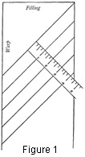
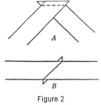

1930—Millinery Processes
by Carlotta M. Brown
BIAS
Strips of material cut on the bias are used for bindings, folds, brim coverings, side crowns, and various decorative purposes. Successful results demand the greatest accuracy in the cutting of these bias strips, for often they are subjected to great strain and will pull unevenly if not on a perfect bias.
 Marking. Place the material on a flat surface, with the right side down. Fold one corner over diagonally so that the warp threads lie parallel to the filling threads (Fig. 1). Crease the fold lightly by patting with the fingers; this crease when unfolded marks the first cutting line. After cutting the triangular corner from the strip, measure for the other strips with the tapeline at right angles to the bias edge, and on the wrong side mark lightly with tailor's chalk or pins a guide line for cutting each strip. The yardstick should be used for this marking as its length makes lifting it from the material unnecessary. Hold the stick firmly to keep the fabric from slipping.
Cutting. Cut along the chalk lines with a full-length sweep of the scissors to avoid the ragged edge made by the shorter, choppy stroke.
 Sewing. Remove all selvedges before seaming. Place the right sides of the strips together at right angles to each other. Slip one end of the strip beyond the other the width of the seam desired; this is usually about ¼ of an inch. Start the seam where the edges cross (Fig. 2, A), and stitch to the opposite side. If a mistake is made and the seam is not deep enough, it must be ripped, the strips readjusted, and the stitching point reestablished. When the seam is opened, both edges of the bias should have a continuous, smooth edge-line (Fig. 2, B). When several strips are needed, it is best to mark, cut, baste, stitch, and press the required number before attaching any to the brim or the crown.